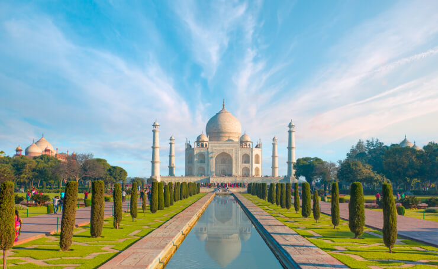
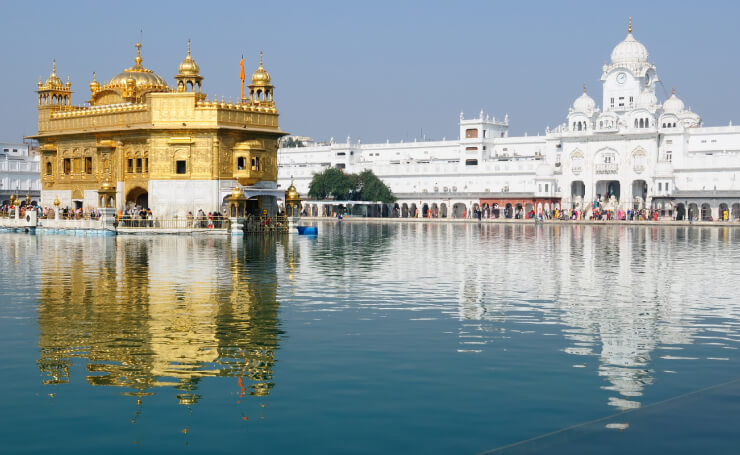
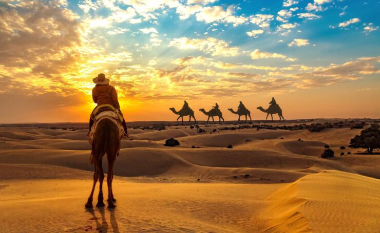
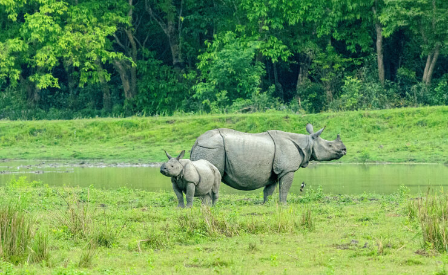
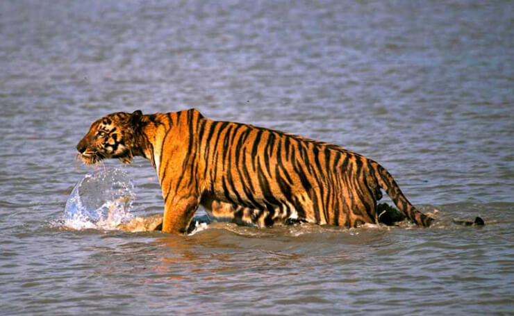
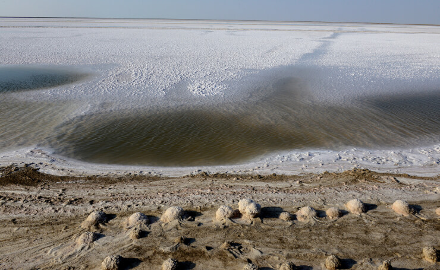
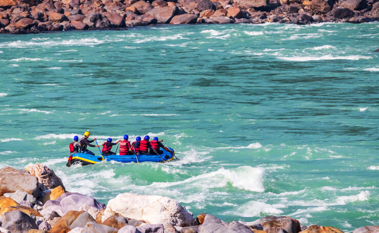

Explore Before You Visit
Agra, Uttar Pradesh: For its unprecedented Mughal grandeur

Home to the symbol of love, Taj Mahal, Agra in Uttar Pradesh finds its spot on the world heritage map. With its three gems, the impressive Taj Mahal, magnificent Agra Fort and splendid Fatehpur Sikri; the city charms thousands of tourists including historians and art lovers from all across India and the world.
Agra also gives a chance to savour authentic and traditional Mughlai flavours, shopping in the lively markets teeming with marble handicrafts & fine leather items, and even soaking your spirits in the enthralling fiesta of the Taj Mahotsav. For a more closer look at this heritage city, get on an off the beaten path journey and explore the narrow alleyways of the old city, ancient temples or visit the renowned poet, Mirza Ghalib’s birthplace.
Delhi: For its incredible history and past

The capital city makes for one of the perfect travel destinations in India. A city of heritage, monuments, teeming with bazaars and mouth-watering street food, high-end malls, and luxury hotels & restaurants; Delhi has something for everyone. So whether you are looking for a heritage walk or a shopping experience or for kids-friendly activities or places for photography or even seek the blessings of god, Delhi will not disappoint.
Punjab: Land of Five Rivers

Home to the gorgeous Golden Temple (Harmandir Sahib), Amritsar in Punjab is a destination that should be included in your India travel itinerary. Even though the Sikh sacred shrine (Golden Temple) makes for the top attraction in Amritsar, there are still plenty of other places that are worth seeing in the city. Amritsar is a reflection of India’s independence struggle and is also in close proximity to the Indo-Pak Border (Wagah/Attari Border).
The city allows a unique experience of witnessing the lowering of the flags ceremony at the Attari-Wagah border by the military of both India and Pakistan. Other than this, the city is a food lover’s paradise. From Amritsari Kulcha to Amritsari Fish to Lassi, the city has so much to offer to you.
Andaman: For its pristine beauty and array of water sports

Known for their picturesque landscape comprising pristine beaches, azure waters and verdant forests, Andaman & Nicobar are a group of more than 500 islands situated in an infinite expanse of the Bay of Bengal. Packed with an array of interesting activities, Andaman & Nicobar is indeed one of the best beach destinations in India.
The islands are home to one of the best beaches in Asia, Radhanagar Beach, which is a paradise for honeymoon couples. For adventure lovers, the azure waters teeming with a diverse marine life and coral reefs, offer a perfect ambience to indulge in some world-class scuba diving and sea walking experiences. The islands are perfect for sighting exotic colourful birds, camping under the open sky and even trying your hands at a bar-be-que, cooking your own fresh catch of a fish or crab.
Maharashtra: For its mesmerizing architecture

Dotted with plenty of ancient monuments, Aurangabad is a historical city located in Maharashtra. A city ruled by several dynasties in the past, today boasts of its rich heritage with its architectural marvels reminding the tales of once reigning dynasties. Mostly famed for its stunning Buddhist cave paintings of Ajanta and Ellora, a UNESCO World Heritage Site, Aurangabad is the best destination to visit for history buffs.
Annually, Aurangabad organizes a cultural fiesta of Ellora Ajanta Festival which showcases the talent of a number of dancers and musicians across the country with the backdrop of illuminated 1400 years old caves. This festival adds to the charm of this historic city and provides one more reason for the art lovers to visit Aurangabad.
When in Aurangabad, do not give a miss to the lifetime opportunity of adding to your wardrobe, a traditional and exquisite collection of fine hand-woven Himroo and Paithani silk, a speciality of the city.
Goa: For its beaches, food & nightlife

Known for its gorgeous beaches, stellar nightlife, delish seafood, world-heritage listed monuments, Goa is where all the fun is in India. Although the beaches of Goa are the primary tourism attractions, there are many surprises waiting to be unravelled.
Goa has one of the best nightlife in India with trendy bars, beach shacks, elegant cafes and many clubs and discotheques. For those looking for a luxury stay, South Goa has many options.
For the history buffs, Old Goa is replete with many whitewashed churches, crumbling forts and spectacular mansions. The adventure junkies are also spoilt for choice in Goa with a number of watersports including snorkelling and jet skiing. The beautiful and quiet settings of Goa also make it a great destination for yoga and Ayurveda.
Karnataka: For its brilliantly carved monuments

A city immersed in the glorious past of the Vijayanagara Empire dating back to the period between 14th and 16th century, Hampi in Karnataka is another great place to visit for history buffs. Ruins of this ancient city with its number of strikingly beautiful monuments, temples and palaces still tell you the tales of grandeur and magnificence of the Vijayanagara rulers.
A trip to this historic place in Karnataka is incomplete without being part of its annually held musical extravaganza of Hampi Utsav. During the festival, one can enjoy live cultural dance performances with the backdrop of the splendid ruins lit up with lights which makes it an exceptional sight to behold.
Jaipur, Rajasthan: For its rich culture and architecture

The Pink City, Jaipur is a destination you cannot miss when visiting India. Jaipur is a perfect reflection of what the royal state of Rajasthan is about – it is elegant, replete with fine monuments, and is rich in culture. Due to preserving and conserving its rich heritage, the city has been recognized by UNESCO a World Heritage Site.
The capital city is dotted with numerous palaces and forts, an open-air observatory, state museum and other museums, and many traditional places to eat. The city also has another side where it offers high-end malls, fancy restaurants, gardens, and much more for its visitors.
Jaisalmer, Rajasthan: plethora of desert activities

Also known as the Land of the Golden Sand, Jaisalmer in Rajasthan is a beautiful city known for its rich cultural heritage and tales of brave Rajput rulers. This popular tourist destination is flanked by the expansive Thar Desert. Jaisalmer offers an authentic experience of Rajasthani culture, traditions, and heritage with its magnificent Sonar Quila or the Jaisalmer Fort, havelis, delectable food, and camel safari opportunity in the desert.
The annual Jaisalmer Desert Festival is a major attraction in the city and a visual treat. Folk dances, cultural and musical performances, campfires under open starlit sky, enthralling camel shows, local haats (shops) selling exquisite jewellery and handicrafts, can also be witnessed and experienced in this must-see festival in Jaisalmer.
Valley's of Kashmir: For its captivating natural beauty

One of the most incredible places in India, Kashmir is known for its natural beauty and is thus, rightly called Heaven on Earth. With its picturesque lakes, lush fruit orchards, verdant meadows, pines and deodars forests, all enclosed with mountains of Himalayan and Pir-Panjal ranges – Kashmir seems to have directly made its way right out from a postcard.
The beautiful Kashmir Valley is home to many destinations ideal for nature lovers, family vacationers, honeymooners, and even a group of friends. Along with great sightseeing opportunities, it offers adventure activities like trekking, skiing, and river rafting, recreational activities like fishing & angling, and even spa & wellness. Shopaholics and food lovers can also have their share of enjoyment as Kashmir spoils them with many options.
Kaziranga National Park, Assam : For its beauty of wildlife

Home to the largest population of the vulnerable species of one-horned rhinoceros, Kaziranga National Park in Assam is one of the best wildlife destinations in India. Kaziranga has also been recognized by UNESCO as a World Heritage Site and is also famous for its elephant grass. Apart from the one-horned rhinos, Kaziranga is home to Hoolock Gibbon, Tiger, Leopard, Indian Elephant, Sloth Bear, Wild water buffalo, and swamp deer among many other species of wildlife.
Kerala: For its backwaters, beaches & culture

Pristine backwaters, coconut-palm fringed beaches, rejuvenating Ayurvedic massages and colourful festivals; Yes! You guessed it right. I am talking about God’s own country, Kerala. One of the most picturesque places in India with a footfall of thousands of tourists every year, Kerala is tucked between Arabian Sea and the Western Ghats and is blessed with immense natural beauty.
Besides serene backwaters and pristine beaches, Kerala is also home to scenic hill stations and numerous wildlife sanctuaries. Offering an umpteen number of tourist activities, Kerala is a must-visit destination for every traveller. From memorable houseboat stays to nature walks through the sprawling tea gardens to wildlife safari to mesmerizing Kathakali performance to savouring traditional dishes, Kerala has a lot to offer.
Ladakh: For its unmatched adventure options

The land of high mountain passes, barren mountains, alpine lakes & meadows, enchanting valleys and ancient colourful Buddhist monasteries, Ladakh is one of the must-visit destinations in India. It is ideal for adventure enthusiasts and nature lovers alike.
Ladakh is unlike any place to visit in India. It is here that you can witness some of the world’s highest mountain passes as well as exotic wildlife species in India’s largest national park. This must-visit destination in India is perfect for motorbiking and mountain biking, camping, river rafting, trekking and peak climbing adventures.
Meghalaya: For its spellbinding natural beauty

Also known as the abode of clouds, Meghalaya is a hidden gem nestled in the lap of pine-covered Khasi and Garo Hills in the Northeastern part of India. One of the most picturesque states of North East India with its innumerable waterfalls, mystic caves, dense forests and sparkling lakes and rivers; Meghalaya is an ideal destination in India for trekkers, cavers/spelunkers and nature lovers.
It is only in Meghalaya where you will come across unique man-made living root bridges that are grown and not built. The ‘double decker living root bridge’ in Cherrapunjee is one such artistic splendour that has been standing strong for over 200 years. Meghalaya also offers a sneak peek of its tribal life along with delicious local food. The state offers a travel experience in India unlike any other.
Mysore, Karnataka: For its rich culture and abundance of attractions

Considered to be the cultural capital of Karnataka in South India, Mysore is a historic city known for its beautiful palaces and gardens. Every attraction of Mysore tells a story related to the city’s glorious past. Whether it is the magnificent Mysore City Palace dazzling with thousands of bulbs or Brindavan Gardens lined up with musical fountains, Mysore does not miss an opportunity to woo its visitors. A major attraction in Mysore is the royal procession of colourfully decked up elephants during the world famous Mysore Dasara Festival. The city is also famous for its beautiful silk saree and delicious sweet, Mysore Pak.
Ghats of Varanasi, Uttar Pradesh: For its spiritual essence

Exploration of India remains incomplete without a trip to the holy city of Varanasi in Uttar Pradesh. Also known as the city of Moksha (salvation), the place holds a great religious significance for the Hindus.
Situated on the banks of sacred river Ganga, the city is believed to be more than 5000 years old. Bustling with enchanting ancient temples and holy Ghats crowded with people performing various rituals and prayers, Varanasi makes for an ultimate spiritual travel destination India.
Varanasi offers a number of experiences such as paying homage to Lord Shiva in the famous Kashi Vishwanath Temple or taking a dip in the holy waters of river Ganga absolving your sins or witnessing the famed Ganga Aarti. When in the city, a must-try is Benaras ki Chaat. Shopping in Varanasi for musical instruments and world-renowned Benarasi Silk Sarees is also a must.
Delta of Sunderbans: For its rich wildlife and rustic charm

Home to the world’s largest mangrove forests and a large population of Royal Bengal Tigers, Sunderbans in West Bengal is one of the most famous wildlife destinations in India. Situated in the delta formed by Brahmaputra, Ganges, and Meghna Rivers, Sunderbans is also home to a large number of wild animals, reptiles and birds. It is also recognized by UNESCO as a World Heritage Site.
Sikkim: For its breathtaking natural vistas and enthralling adventures

One of the most beautiful places in India, Sikkim is a glittering gem of the North-East Himalayas. This northeast Indian destination is popular for being home to the world’s third highest mountain, Kanchenjunga (8586 m). Sikkim is one of the best destinations in India to spend a peaceful and laid back holiday as well as enjoy enthralling adventure activities.
Teeming with some of the world’s scenic trekking trails and rivers, this little northeastern state makes for a perfect adventure destination in India for trekkers, rafting enthusiasts, mountaineers and rock climbers. It is also famous for offering an experience of Yak Safari.
Rann of Kutch, Gujarat: For its salt desert and village life experience

An enormous stretch of white salt desert, the Great Rann of Kutch in Gujarat is amongst the best places to visit in India. Sprawling in an area of 7500 sq km, Rann of Kutch is one of the largest salt deserts in the world and only one of its kind in India. This must-see place in Gujarat comes to life during the annual Rann Utsav when the white canvas gets painted with different hues and shades of lively folk performances and art.
Along with live folk music and dance performances, one can enjoy camel safaris and delicious Kutch cuisine. Visitors can also watch colourful migratory birds in the Chhari Dhand Bird Sanctuary, breath-taking views of the infinite expanse of the Rann from Kala Dungar and artisans creating magic with their hands by making exquisite embroidery pieces.
What adds to the charm of this memorable trip is a stay in traditional Bhungas or cylindrical shaped huts with conical roofs in the enchanting Hodka and Dhordo Villages nearby. Providing you a feel of a rustic village life.
Rishikesh, Uttarakhand: For its essence of spirituality and adventure

Seated on the bank of holy River Ganga, Rishikesh in Uttarakhand is an unmissable destination in India. Also dubbed the Yoga Capital of the country, Rishikesh is primarily visited by either yoga aspirants or those seeking a spiritual experience. Learning yoga in the ashrams of Rishikesh and in the evening watching the Ganga Aarti are two of the best experiences in the city. But that’s not all that Rishikesh offers, there are many adventure activities inviting you for an experience of a lifetime. Adventure lovers can indulge in activities like camping, white water rafting, bungee jumping from India’s highest platform, and flying fox (Asia’s longest ride).